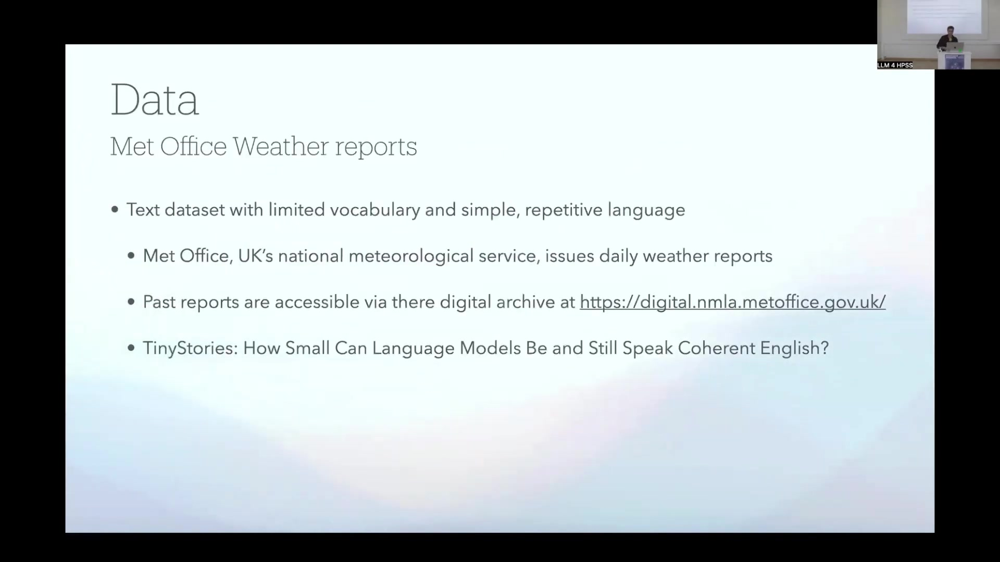

15 Time-Aware Language Models
15.1 Overview
The presentation describes the development and evaluation of a novel architecture for creating time-aware language models (TALMs), specifically targeting applications in historical analysis. The core problem addressed is the implicit nature of temporal understanding in current Large Language Models (LLMs), which is derived statistically from training data. The proposed solution involves explicitly adding a temporal dimension to the latent semantic token features within a Transformer architecture.
The technical approach modifies a standard Transformer decoder model by injecting time data, represented as a non-trainable, min-max normalized day of the year, into the token embeddings. This allows the model to learn how the probability distribution of tokens depends on time.
A proof-of-concept implementation utilizes a small generative LLM trained on a specific dataset: daily weather reports from the UK Met Office digital archive for the years 2018-2024. This dataset consists of approximately 2,500 reports, each 150-200 words long, characterized by a limited vocabulary and repetitive language. The text processing involves text vectorization with standardization (lower and strip punctuation) and no sub-word tokenization, resulting in a vocabulary of 3,395 words.
The model architecture is a modest-sized Transformer decoder with 4 multihead attention blocks, totaling 39 million parameters (150 MB). This is significantly smaller than models like GPT-4 (1.8 trillion parameters across 120 layers). Training is performed on 2 x A100 GPUs, taking 11 seconds per epoch. The code for the vanilla and time-aware Transformer models is available on GitHub at https://github.com/j-buettner/time_transformer.
Two experiments demonstrate the model’s ability to learn temporal drift:
Synonymic Succession: Synthetic drift is injected by time-dependent replacement of “rain” with “liquid sunshine” following a sigmoid probability curve over the year. The model successfully reproduces this time dependence in predicted token sequences.
Changing Co-occurrence/Collocation Fixation: Synthetic time-dependent change is injected where “rain” followed by any word except “and” is replaced by “rain and snow” with increasing probability over the year. The model learns this changing co-occurrence pattern, demonstrating the fixation of the “rain and snow” collocation over time. Attention analysis shows increased attention from “snow” to “rain” in the predicted sequences.
The proof of concept indicates that Transformer-based LLMs can be made time-aware efficiently by adding a temporal dimension to the token embedding. Potential applications include providing a foundation for downstream tasks on historical data, enabling instruction-tuned models to “talk to a specific time,” and modeling dependence on other metadata dimensions (country, genre). Challenges include uncertainty regarding the efficiency of fine-tuning due to architectural changes, the need for data curation (including timestamping token sequences), and the loss of metadata-free self-supervised learning benefits. An alternative approach involving a targeted encoder model or changing the training task (e.g., predicting document date) is also considered.
Discussion points include the potential for modeling semantic shift over time using this approach, the importance of persistent identifiers for source tracking, existing literature on time-aware LLMs and semantic change detection (specifically mentioning encoder-based models and “temporal heads” in foundational models), and a theoretical discussion on whether explicit time injection is necessary given that temporal information is implicitly present in other factors.
15.2 Motivation for Time-Aware Language Models

Current Large Language Models (LLMs) exhibit only an implicit understanding of time. This temporal understanding is derived statistically from the patterns observed within their training data. Introducing explicit time awareness into these models is identified as a beneficial enhancement, particularly for their application in historical analysis and potentially other fields where temporal context is crucial.
15.3 Text Processing Architectures
The primary neural network architectures employed for processing text have evolved. Historically, around 2017, Long Short-Term Memory (LSTM) networks were the dominant architecture for tasks such as next-token prediction. As of approximately 2025, the landscape has shifted, with Transformer networks becoming the primary architecture utilized for next-token prediction and other text processing tasks.
15.4 Explicit Time Awareness
The concept is that Large Language Models can be endowed with explicit time awareness. This involves enabling the models to learn and subsequently reproduce patterns within their training data that change as a function of time. A proof of concept for this approach is based on the implementation using a small generative LLM.
15.5 Temporal Dependence of Token Probabilities

Standard Large Language Models estimate the probability distribution over their vocabulary for the next token, x_n, conditioned on a sequence of preceding tokens, x_1, ..., x_{n-1}. This is formally expressed as p(x_n | x_1, ..., x_{n-1}).
However, in real-world scenarios, the probability of a token given its context is not static; it is dependent on time, t. This temporal dependence is represented as p(x_n | x_1, ..., x_{n-1}, t). Consequently, the probability of an entire sequence of tokens, x_1, x_2, ..., x_n, generated at a specific time t, is the product of these time-dependent conditional probabilities for each token in the sequence: p(x_1, x_2, ..., x_n | t) = \prod_{k=1}^{n} p(x_k | x_1, x_2, ..., x_{k-1}, t). During inference, current LLMs can only reflect the temporal drift observed in the underlying distribution of token sequences through in-context learning, which is an implicit mechanism.
15.6 Modeling Time-Dependent Probabilities
A key challenge is explicitly modeling the time-dependent probability of the next token, p(x_n | x_1, ..., x_{n-1}, t). An approach involving time slicing, where separate models are trained for distinct time periods, is considered extremely data inefficient.
The proposed solution is a Time Transformer architecture. This method involves adding a temporal dimension to the latent semantic features of each token. The combined embedding for a token x at time t is represented as a vector E(x, t) = \{e_1(x), e_2(x), ..., e_{d-1}(x), \phi(t)\}, where e_i(x) are the standard semantic features and \phi(t) is a feature representing time. This sequence of time-aware embeddings, [E(x_1, t), E(x_2, t), ..., E(x_{n-1}, t)], is then fed into a Transformer model to predict the time-dependent probability of the next token, p_\theta(x_n | x_1, ..., x_{n-1}, t).
The training objective for this model is to minimize the negative log-likelihood across the entire dataset, given by \min_\theta - \sum_{i=1}^N \sum_{k=1}^{n^{(i)}} \log p_\theta(x_k^{(i)} | x_1^{(i)}, ..., x_{k-1}^{(i)}, t^{(i)}), where the summation is over all sequences i in the dataset, each with length n^{(i)} and associated time t^{(i)}. This approach injects time directly into the representation of every token, enabling the model to learn precisely how strongly or weakly the temporal dimension influences each token’s probability.
15.7 Data Source and Preparation

The data source utilized for the proof-of-concept implementation consists of Met Office Weather reports. This dataset is characterized by a limited vocabulary and the use of simple, repetitive language, making it suitable for initial experimentation with a small model. The reports are provided by the Met Office, the UK’s national meteorological service, and past reports are accessible through their digital archive at https://digital.nmla.metoffice.gov.uk/.
The specific dataset used comprises daily reports covering the years 2018 through 2024, totaling approximately 2,500 reports. Each report is between 150 and 200 words in length. Text processing is performed using tf.keras.layers.TextVectorization with the standardization setting standardize="lower_and_strip_punctuation". This process involves neglecting case and interpunctuation, and notably, no sub-word tokenization is applied. This results in a vocabulary size of 3,395 unique words. The choice of a small model and dataset relates conceptually to research exploring the capabilities of small language models, such as the work described in the paper “TinyStories: How Small Can Language Models Be and Still Speak Coherent English?”.
15.8 Transformer Model Architecture and Training

The baseline model architecture is a modest-sized Transformer decoder. It consists of an Embedding Layer, Positional Encoding, Dropout, four Decoder Layers, and a Final Dense Layer. Each Decoder Layer incorporates Multi-Head Attention, followed by Add & Norm, a Feed-Forward Network (FFN), and another Add & Norm step.
The model has a total of 39 million parameters, occupying approximately 150 MB, which is considerably smaller than large models like GPT-4, which has 1.8 trillion parameters distributed across 120 layers. Training is conducted using 2 x A100 GPUs, achieving a speed of 11 seconds per epoch. The code implementation for this model is available on GitHub at https://github.com/j-buettner/time_transformer.
The training process demonstrates that the model learns to reproduce the language style and patterns of the weather report dataset effectively. For instance, given the seed sequence “During the night, a band …”, the model generates text such as “… of rain moved into scotland northern ireland and northern england outbreaks of rain continued to move across northern england and wales it stayed largely dry with clear spells and a few scattered showers in the north and west elsewhere there were plenty of clear spells and a few fog patches and overall it was a mild night across the south of the uk ….”. Model performance is tracked using accuracy, visualized in a line graph showing training and validation accuracy over 50 epochs. The training accuracy exhibits a steady increase, while the validation accuracy increases initially before plateauing.
15.9 Time Transformer Architecture

The Time Transformer architecture is created with a minimal adjustment to the vanilla Transformer model. The input now includes both Text Input and Time Data. The Text Input is processed by an Embedding Layer, while the Time Data is processed by a dedicated Time Embedding layer.
The outputs from the standard Embedding Layer and the Time Embedding layer are combined. This combined embedding is then fed into the Casual Masking and Positional Encoding layers. The subsequent layers, including the Decoder Layers and the Final Dense Layer, retain the same structure as the vanilla model. The time dimension is represented as a non-trainable, min-max normalized value corresponding to the day of the year. The time embedding is calculated using the formula time embedding = (day of year - 1) / (365 - 1), normalizing the day of the year (1 to 365) to a range between 0 and 1.
15.10 Experiment 1: Learning Synonymic Succession

The first experiment aims to evaluate the model’s ability to efficiently learn temporal drift within the underlying data distribution, specifically focusing on synonymic succession. This involves injecting synthetic drift into the training data by implementing a time-dependent replacement rule: the word “rain” is replaced by the phrase “liquid sunshine”. The probability of this replacement occurring follows a sigmoid curve across the days of the year, ranging from Day 0 to Day 365. The probability starts near 0.00 at the beginning of the year and increases to near 1.00 by the end of the year, with the most significant increase occurring around Day 180.
The evaluation method involves checking whether this injected time dependence is accurately reproduced in the token sequences predicted by the model, generating a separate sequence for each day of the year. The presentation also notes observed seasonal patterns in the real weather data, illustrated by bar charts. One chart shows the monthly occurrences of “Rain and Snow” versus “Rain Only”, indicating that “Rain and Snow” is more frequent in the later months (September to December), while “Rain Only” is more frequent in the earlier months (January to April). Another chart depicts the monthly occurrences of terms related to heat (“Hot”, “Warm”) versus terms related to cold and snow (“Snow”, “Sleet”, “Wintry”), clearly showing that “Snow”, “Sleet”, and “Wintry” terms are more prevalent in the winter months (January, February, March, November, December), while “Hot” and “Warm” terms are more frequent in the summer months (June, July, August).
15.11 Experiment 2: Learning Changing Co-occurrence

The second experiment also aims to evaluate the efficient learning of temporal drift, focusing on a changing co-occurrence pattern, specifically termed ‘fixation of a collocation’ from a variable to an obligatory relationship. This involves injecting a synthetic time-dependent change into the training data: any instance of the word “Rain” followed by any word other than “and” is synthetically altered to become “rain and snow”. This process is described as analogous to the linguistic concept of the fixation of a collocation, citing “bread and butter” as a common example.
The evaluation is presented through a bar chart titled “Monthly Comparison of”Rain and Snow” vs. “Rain Only” Occurrences” based on the predicted sequences generated for each day of the year. The y-axis quantifies the occurrences of “rain” only versus “rain and snow” in these predictions. The chart visually demonstrates that the blue bars representing “Rain and Snow” occurrences are higher in the later months (September to December), while the green bars representing “Rain Only” occurrences are higher in the earlier months (January to April), effectively reproducing the injected synthetic drift pattern. Example predicted sequences for Day 1 and Day 363 illustrate this learned pattern, both showing “heavy rain and snow”. Further analysis is presented via an attention chart titled “Attention from ‘snow’ to previous 10 tokens (Head 5)”. This bar chart displays the attention weights from the token ‘snow’ to the preceding 10 tokens. The bar corresponding to “rain” exhibits the highest attention weight, approximately 0.45, indicating that the model has learned a strong associative link between “rain” and “snow” within this specific context.
15.12 Proof of Concept, Applications, and Challenges

The proof of concept demonstrates that Transformer-based Large Language Models can be efficiently made time-aware by augmenting the token embedding with a temporal dimension. This approach offers several potential applications. A foundational Time Transformer could serve as an excellent base model for various downstream tasks involving historical data.
Furthermore, an instruction-tuned Time Transformer could enable users to interact with the model by specifying a particular time period, effectively allowing them to “talk to a specific time.” This capability might also lead to improved results in standard usage scenarios where the model is expected to reflect the present state of knowledge or language (“talk to the present”). The methodology is also potentially generalizable, suggesting that the dependence of underlying token sequence distributions on other contextual or metadata dimensions, such as country or genre, could be modeled using a similar approach.
Potential next steps for this research include benchmarking the Time Transformer against alternative methods, such as an explicit time-token approach, and testing whether the proposed architecture leads to an increase in training efficiency. Further exploration of other aspects is also warranted.
However, several challenges must be addressed for practical application. It is currently unclear whether fine-tuning the modified architecture is possible and efficient. The approach also necessitates significant data curation, particularly the accurate determination of the generation time for each token sequence, which represents a loss of the metadata-free benefit typically associated with self-supervised learning. Accurately timestamping historical data is identified as a key challenge. An alternative direction considered is the development of a modest, targeted encoder model for time-aware tasks.